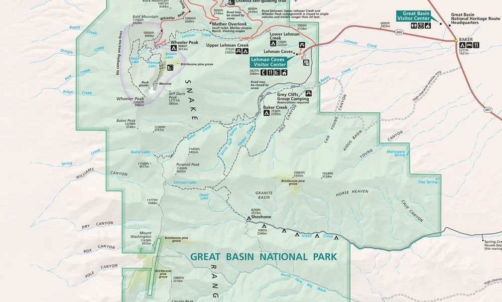

Great Basin National Park Reference Map
GRBA-2026-02 · Delivered

Overview
A cartographic design exercise reproducing the visual language of official National Park Service brochure maps: hypsometric tinting and hillshade for terrain, a restrained NPS palette, and a full symbology set for trails, campgrounds, visitor centers, and points of interest across the park and the surrounding Snake and Spring Valley context. Peaks, ranges, and the Highland Ridge Wilderness boundary are labeled to NPS typographic conventions.
Processing
SoftwareArcGIS Pro
Methods
- Hypsometric tinting and hillshade for terrain depiction
- NPS-style symbology for trails, facilities, and points of interest
- Typographic hierarchy and labeling after the NPS brochure standard
- Layout composition with legend, scale, and locator context
Deliverables
- Reference park map (PDF)
Key Technical Challenge
Matching the NPS house style — typography hierarchy, terrain shading, and feature symbology — while keeping a dense set of recreation features legible.